Clusteranalyse
Cluster-Analysis
Zusammenfassung
Wir führen eine Clusteranalyse für die Durchschnittstemperaturen in Städten der USA über einen Zeitraum von drei Jahren durch.
Hierbei beginnen wir mit einer hierarchischen Clusteranalyse mit zufällig ausgewählten Daten, um die beste Methode zum Clustern zu finden. Die K-Means-Analyse, eine schnelle Clustermethode, wird dann für den gesamten ursprünglichen Datensatz durchgeführt.
Origin-Version mind. erforderlich: Origin 2020
Hierarchische Clusteranalyse
- Öffnen Sie ein neues Projekt oder eine neue Arbeitsmappe. Importieren Sie die Datendatei \Samples\Graphing\US Mean Temperature.dat.
- Markieren Sie die Spalten D bis O.
- Wählen Sie Statistik: Multivariate Analyse: Hierarchische Clusteranalyse, um den Dialog zu öffnen.
- Klicken Sie auf der Registerkarte Eingabe auf die dreieckige Schaltfläche
 neben Variablen und klicken Sie dann auf Spalten wählen im Kontextmenü.
neben Variablen und klicken Sie dann auf Spalten wählen im Kontextmenü.
- 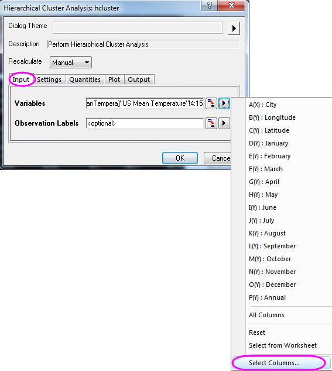
- Klicken Sie im unteren Bedienfeld des Dialogfelds Spaltenbrowser auf die Schaltfläche .... Legen Sie den Datenbereich auf 1 bis 100 fest. Klicken Sie auf OK.
- 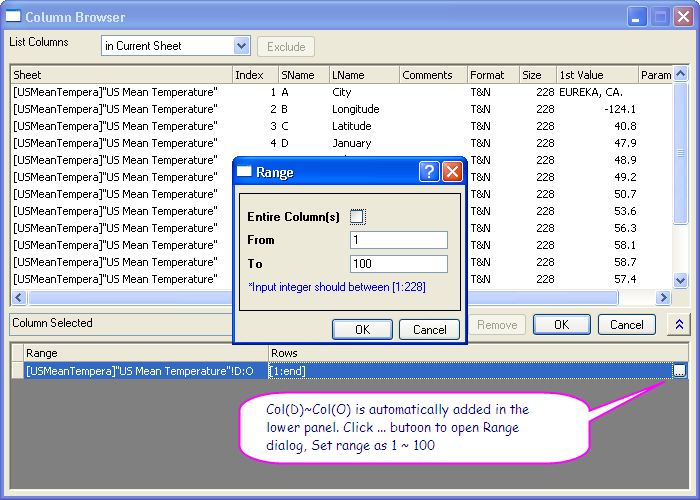
- Klicken Sie auf die Registerkarte Einstellungen und stellen Sie sicher, dass Cluster auf Beobachtungen gesetzt ist und Anzahl der Cluster auf 1. Wählen Sie für die Cluster-Methode die Option Entferntester Nachbar und klicken Sie dann auf OK.
- 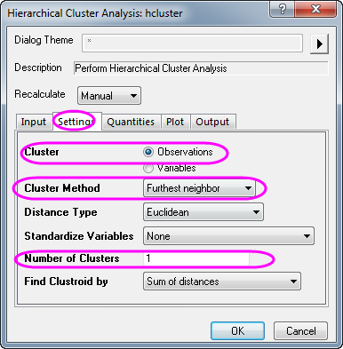
- Wechseln Sie zum Blatt Cluster 1. Nach der Untersuchung des sich ergebenden Dendrogramms werden die Daten in 5 Gruppen geclustert.
- 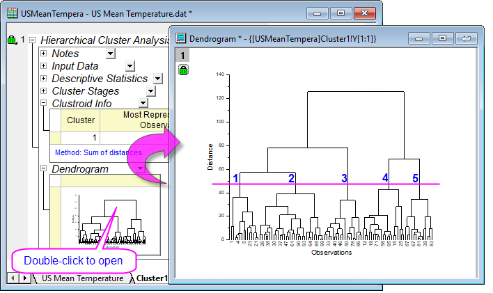
- Klicken Sie auf das Schlosssymbol in dem Dendrogramm oder Ergebnisbaum und dann auf Parameter ändern im Kontextmenü.
- Setzen Sie auf der Registerkarte Einstellungen die Anzahl der Cluster auf 5 und aktivieren Sie dann das Kontrollkästchen Clusterzentrum im Zweig Eigenschaften. Klicken Sie auf OK.
- 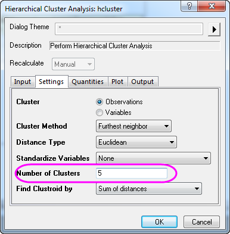
- 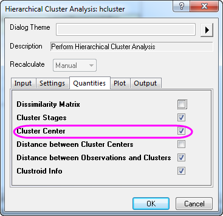
- In dem sich ergebenden Dendrogramm ist deutlich zu sehen, wie die Beobachtungen geclustert sind. Beachten Sie, dass Sie doppelt auf das eingebettete Dendrogramm im Berichtsblatt klicken können, um das Dendrogramm in seinem eigenen Fenster zu öffnen. Von hier aus können Sie das Dendrogramm benutzerdefiniert anpassen -- beispielsweise Textbeschriftungen, Pfeile etc. hinzufügen --und dann auf die Schaltfläche Schließen in der oberen rechten Ecke des Diagrammfensters klicken, um die Änderungen im eingebetteten Diagramm im Berichtsblatt zu übernehmen.
- 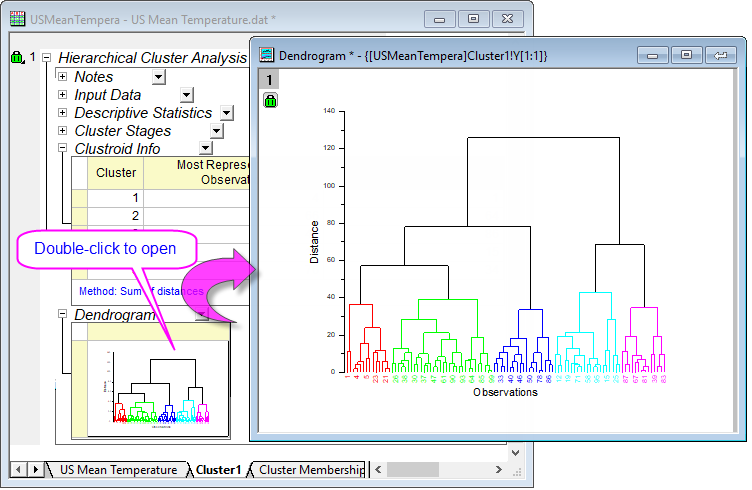
- Um sich auf einen bestimmten Unterbaum zu konzentrieren, klicken Sie auf einen Knoten, um ihn auszuwählen. Klicken Sie dann mit der rechten Maustaste auf ihn und wählen Sie Zweig in neuem Fenster duplizieren. Der ausgewählte Unterbaum wird in einem neuen Diagrammfenster geöffnet.
- 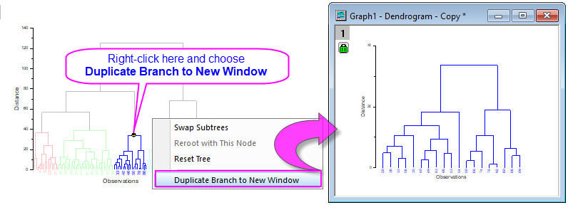
 |
- Beachten Sie, dass Sie seit Origin 2019b auf der Registerkarte Diagramm des Dialogs hcluster eine Option für die Anzeige von Ähnlichkeit auf der Y-Achse Ihres Dendrogramms finden können (Distanz ist noch immer die Standardauswahl).
|
Originaldaten mit der K-Means-Clusteranalyse analysieren
- Klicken Sie mit der rechten Maustaste auf Clusterzentrum und wählen Sie Eine Kopie als neues Blatt erstellen im Kontextmenü. Das neu erstellte Blatt Clusterzentrum wird als Anfängliche Clusterzentren in der K-Means-Clusteranalyse verwendet.
- 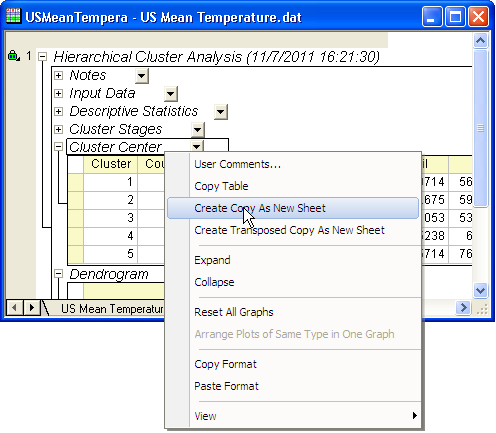
- Wechseln Sie zum Arbeitsblatt mit den Quelldaten (US Mean Temperature) und markieren Sie Col(D) bis Col(O). Wählen Sie Statistik: Multivariate Analyse: K-Means-Clusteranalyse.
- Aktivieren Sie das Kontrollkästchen Anfängliche Clusterzentren festlegen auf der Registerkarte Optionen. Klicken Sie auf die interaktive Schaltfläche
 neben Anfängliche Clusterzentren. Der Dialog wird minimiert.
neben Anfängliche Clusterzentren. Der Dialog wird minimiert.
- Wechseln Sie zu Clusterzentrum und markieren Sie Col(D) bis Col(O). Klicken Sie auf die Schaltfläche im minimierten Dialog, um den Dialog wiederherzustellen.
- Wählen Sie auf der Registerkarte Diagramm die Option Zusätzliches Gruppendiagramm. Klicken Sie auf die interaktive Schaltfläche neben X-Bereich. Der Dialog wird minimiert. Wechseln Sie zurück zum Quellarbeitsblatt US Mean Temperature und markieren Sie die Spalte Col(B):Longtitude. Klicken Sie auf die Schaltfläche im minimierten Dialogfeld, um es wiederherzustellen.
- Klicken Sie auf die dreieckige Schaltfläche neben Y-Bereich und wählen Sie dann C(Y), Latitude. Klicken Sie auf OK.
- 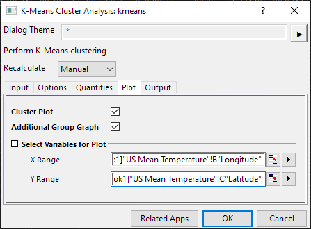
- Aktivieren Sie das Arbeitsblatt K-Means Plot Data1. Sie können sehen, dass die Daten in 5 Gruppen geclustert wurden, entsprechend den Breitengraden der Städte.
- 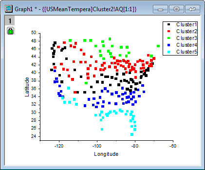
|
Anwender können auch das Ausgabeziel der Spalte Clusterzugehörigkeit auswählen, z. B. direkt neben den Eingabedaten, für mögliche weitere Operationen.
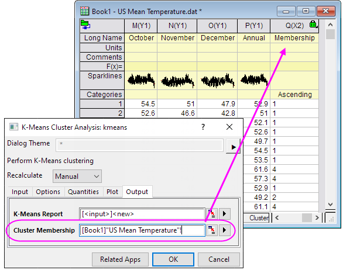
|